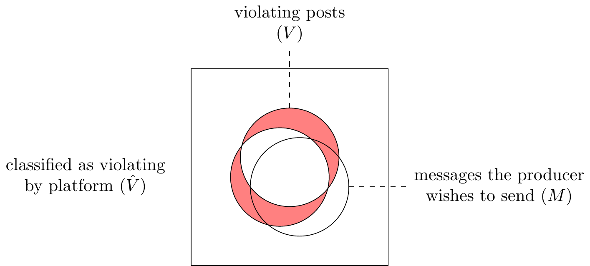

SEE ALSO: 2023-10-26-models-of-ai-and-the-world.qmd
\[\xymatrix{a&b}\]
PRIORITY
- Entertainment will be replaced but information will not.
LOWER PRIORITY:
- The dichotomy between human-creation and machine-ranking of items.
- Arms race for quality in google search (article below), and in FB public content.
- UV light in scanning banknotes
- C2PA fingerprintin
- Grady Ward notes: https://docs.google.com/document/d/1c-uUZqJ41116qk1KRQjljsA81E3dVQTG80YohE49Afc/edit
- ADD: Dave Willner’s point: LLMs will allow us to have much finer-grained moderation, and so policies can be more complex
- E.g. discriminate between black-on-white vs white-on-black speech (he said when he wrote FB’s policy it was simple because of rater confusion, not because of fairness or PR concerns).
- E.g. the oversight board gets escalated obvious false positives - the advantage of LLMs is you can lay out a very precise detailed policy and trust it will get correctly interpreted.
- E.g. policy on important exemptions (napalm girl)
- E.g. policy on holocaust denial: too much work to decide which events count as atrocities.
- ADD: something about
- ADD: Michael Bernstein’s proposals about using LLM to get at semantics of posts and rank in that way.
- ADD: watermarking systems will allow you to prove real, even if you can’t prove fake. Analogy with email if it had adopted PGP early.
Other peoples’ writing:
- Simon, Altay, Mercier “Misinformation Reloaded”
- READ THIS: https://knightcolumbia.org/content/how-to-prepare-for-the-deluge-of-generative-ai-on-social-media , tweet thread
- https://knowledge.insead.edu/operations/navigating-trust-and-safety-world-generative-ai
- “artificial intelligence and the public arena”
- Gentzkow on AI and media:
- https://web.stanford.edu/~gentzkow/research/ai_and_media.pdf
- https://web.stanford.edu/~gentzkow/research/ai_and_media_slides.pdf
- Sandy Pentland, Honest Signals
IN A WORD:
- GenAI: good for internal, bad for external properties.
- GenAI: breaks down the correlation between extrinsic and intrinsic. E.g..
MODELS:
- Venn. -
- Signal extraction. - cheaper to fake signal: burden on false positives and negatives
- Quigley. -
- Acemoglu misinfo. -
- Producer incentives. - should put features in your classifier that are complements of quality not substitutes
- Strategic Classification/Hardy. -
SEE ALSO:
- 2023-04-16 shallow and deep quality
- 2022-03-26-moderation-models: Producer Incentives: (1) hard coded rules counterproductive; (2) commit to repeat-offender rules; (3)
- 2022-01-03-models-of-communication-and-spam.md
- 2021-08-16 technology and adversarial situations – does technology help the center or periphery?
- 2020-12-17-social-media-master.md – has a table of diff types of decentralized media and exploitations
OLD URL: http://tecunningham.github.io/2023-06-06-effect-of-ai-on-communication.html
MODELS
Dan Quigley “Falsification in Disclosure Games”
Model.
- State is binary, receiver takes binary action, wants to match state.
- Sender gets private signal and sends a message.
- Two types of sender:
- High type: send the truth.
- Low type: can spend money and then send a false signal.
- e_s = probability the sender falsifies evidence
- e_m = probability the moderator detects falsified messages
Description:
The sender observes whether the state is low or high, and wants to persuade the receiver that the state is high. They can send a verifiable message about the state. There will be unravelling.
Now suppose the sender can pay money to probabilistically fake a high signal. Then in some circumstances there will be a separating equilibrium, and the receiver will take the sender’s desired action.
Now suppose the platform can pay money to probabilistically detect fakes (equivalently: they prevent the sender from sending). Then the sender and moderator will both pay positive amounts.
Application:
- Starting point: suppose I’m sharing photos to try to persuade you that Democrats are evil.
- Suppose I can invest money to fake a photo of a Democrat doing something evil. Then there will be some equilibrium persuasion (this depends on the action being nonlinear in beliefs).
- Suppose the platform can invest money to prevent fakes (or equivalently, detect and label them). There will be some equilibrium.
Ines “Misinformation as Selective Information”
- There is a true state of the world, \(\theta\in\{L,H\}\)
- The expert can send a signal drawn from \(x~F(theta)\)
- They can repeatedly draw and just send the maximum
Shin (1994) “News management and the value of firms”
- Suppose you get to choose how much information to release
- Unravelling argument: Grossman (1981) and Milgrom (1981)
- Avoid unravelling: if the receiver doesn’t know whether the sender knows.
Hardt et al. (2015) “Strategic Classification”
In short: They model how to design a classifier when the applicants can manipulate features at some cost. Main result is that if the cost is separable then you can design an almost-optimal classifier, but if more complicated then you cannot.
Example: books owned is a good predictor of performance, so you use that as a signal in admitting students. But when students learn this they buy more books. In equilibrium will set weights on features in proportion to cost of faking.
Spam example: they give a list of features that predict spam and then assign notional costs, e.g. follower count, phone number, length of description. They show you can get good classification accuracy (for emails could be: having a URL, mentioning Viagra).
Model
- Sender has type \(x\in X\)
- Exogenous mapping \(h(x)\) of type to binary quality: \(h:X\rightarrow\{-1,1\}\)
- Receiver announces a classifier \(f:X\rightarrow\{-1,1\}\)
- Sender has a cost function for distorting their type, \(c:X\times X\rightarrow \mathbb{R}\)
- Result: if cost is separable then can get almost-optimal classification. In addition the receiver can learn the cost function even if they don’t observe it at first.
Observations
- The sender’s actions have no effect on the true quality. it’s all extrinsic. This makes it less useful for many online tasks, where the observed features X are themselves bearers of value.
- There’s no free entry. If you admit a non-zero fraction of spam then this cannot be a free entry equilibrium: with a non-zero change of success then spammers would keep entering. Thus in practice spam must also be limited by some cost of creating a message. Could be (1) signup friction; (2) require a waiting period before you can post; (3) kill account after it’s produced ground-truth spam.
Prediction: Influence Operations Will Become Somewhat More Effective
Government-sponsored influence operations typically employ many people to write posts and messages, and LLMs would make the creation of messages much cheaper. However as people come to encounter more personalized messages they are likely to adopt a higher level of skepticism which would somewhat blunt the advantage due to LLMs.
Influence operations often repeat the same message from many accounts but there is value in customizing the message so that (1) it is harder for platforms to detect that messages are coming from a common source; (2) the messages can be context-specific, e.g. replying to another user’s tweet or conducting a conversation over direct messages.1
1 A 2022 report from the Stanford Internet Observatory lists a number of ways in which LLMs could be used by influence operations, mainly by writing copy either for social media posts or for 1:1 message threads.
The ability of LLMs to generate customized messages at almost zero cost are likely to help influence operations, who already employ many humans to create customized messages.2
2 The Russian “Internet Research Agency” has been estimated to employ around 1,000 paid posters in 2017. King et al. (2017, APSR) estimate that 0.5% of all social media posts in China are government sponsored, a large share of which seem to be from humans (i.e. not from bots).
Concretely we would expect users to encounter replies on public posts, replies to their own posts, and direct messages, all of which are practically indistinguishable from human-generated replies, but are in fact synthesized by LLMs either for the purpose of persuading, or to establish a connection which can later be used to persuade.
In the pre-LLM environment it is reasonable to assume that a small-scale message is from a human and is expressing a good-faith opinion because it would not be worthwhile for an influence operation to spend money on individualized messages. In the post-LLM environment the assumption no longer holds thus we might expect an uptick in the effectiveness of persuasion. The overall quantity of influence-operations messages might stay roughly the same because the operations will still be fighting to hide from the platforms (hide from the platforms’ bot-detectors and influence detectors).
However rather there are reasons to think that users will learn to be more skeptical. We know that skepticism adjusts to the circumstance in many other areas: most people who live in a big city in the 21st century have learned to be skeptical in the folllowing circumstances,
- Receiving a letter which is hand-addressed or a letter stamped “congratulations.”
- Receiving an unsolicited phone call from the bank or from tech support.
- Receiving a visit from someone who claims to be from the gas company.
- Being approached on the street by someone who says they lost their wallet.
It seems likely that people will generally update to learn that personalized messages are not to be trusted. The majority of personalized messages are likely to come from commercially-motivated operations, e.g. selling crypto coins or trying to extract credentials, and exposure to these experiences is likely to discredit all personalized messages.
There will be collateral damage on sincere personalized messages: it will become harder to strike up a friendship on social media or send someone an unsolicited message because people will have an elevated sense of distrust.
Internal/External properties
Internal: nudity, funny, offensive, engaging, political. Ground truth is human judgment.
- Perfect AI will allow perfect discrimination
- Classifier types: banned words, regular expressions, hand-crafted features, nearest-neighbor with similarity metric, semantic nearest-neighbor (LLM).
- Adversary: contrained optimization They want to trick the algorithm, but they don’t trick the person. Someone who just wants to violate is a troll.
- Equilibrium: toe the line. If discontinuous threshold then producers will cluster just below that threshold.
- Equilibrium: whack-a-mole.
- Collateral damage. If classifier uses extrinsic properties then can have collateral damage in medium-run.
- Returns to scale. When acting against adversaries then there are strong gains to experience, esp. against other adversaries.
- Non-content features. Engagement, author, graph features. Used for positive properties more than negative.
External: misinfo, phishing, copypasta, trustworthy (ebay). Ground truth is not just content.
- Perfect AI will allow perfect fakes.
- Non-content features. Engagement, provenance, reputation. If these refer to ground truth then can be helpful.
Extrinsic vs Intrinsic.
Diagnostic: if it has predictive power \(E[v|x_i=1]\neq E[v|x_i=0]\)
Intrinsic: if it has predictive power ceteris paribus. \(E[v|x_i=1,x_{-i}]\neq E[v|x_i=1,x_{-i}]\)
Examples of diagnostic but extrinsic:
- capital letters in text
- clouds in photographs (when determining if a tank)
Hard for classifier to know what’s intrinsic: If you only train on a subset of the sample space, then can’t tell whether a feature is intrinsic or diagnostic.
Note: hard to talk about effect of features. Need a clear counterfactual and often counterfactual is ambiguous. Think of simplex triangle. Uppercase is OK. Clouds is OK. Talking about effect of gross features is hard.
.
References
Bender et al., Stochastic Parrots
Bender, Gebru, McMillan-Major, Mitchell (2021, FAccT) “On the Dangers of Stochastic Parrots: Can Language Models Be Too Big?”
“LMs are not performing natural language understanding (NLU), and only have success in tasks that can be approached by manipulating linguistic form [14].”
“the tendency of human interlocutors to impute meaning where there is none can mislead both NLP researchers and the general public into taking synthetic text as meaningful.”
“Combined with the ability of LMs to pick up on both subtle biases and overtly abusive language patterns in training data, this leads to risks of harms, including encountering derogatory language and experiencing discrimination at the hands of others who reproduce racist, sexist, ableist, extremist or other harmful ideologies reinforced through interactions with synthetic language.”
Coherence in the Eye of the Beholder. It produces “apparently” coherent text but not really coherent.
Risks and Harms. Generally: absorbing hegemonic worldview. E.g.: 1. Assuming doctor will be male, nurse female; 2. Outputting abusive language; 3. Generate meaningless text & used, e.g., to recruit terrorists.
Especially this point: *apparent* fluency will mislead people into thinking that there's some genuine content.
> *"the human tendency to attribute meaning to text, in combination with large LMs’ ability to learn patterns of forms that humans associate with various biases and other harmful attitudes, leads to risks of real-world harm."*Also discuss environmental cost.
Proposal. Value-sensitive design.
2023-02: Goldstein et al. “Generative Language Models and Automated Influence Operations: Emerging Threats and Potential Mitigations” - 
Low trust in the 19th century:
- David Henkin book: in 19th century NY 40pct of banknotes circulating were fake.
- Adulterated foods
- Partisan news
Benson (2023, Wired) “Humans Aren’t Mentally Ready for an AI-Saturated ‘Post-Truth World’” — quotes from psychologists saying things like “Anxiety is just going to ratchet up as we’re faced with this unknown thing in our world.”
Alex Rosenblatt (2023) “Human Review is no Longer the Gold Standard”
Prediction that LLMs will be used for Spear Phishing: https://twitter.com/emollick/status/1681374663505575936
Glukhov et al. (2023) LLM CENSORSHIP: A MACHINE LEARNING CHALLENGE OR A COMPUTER SECURITY PROBLEM?
Internal vs External Properties [UNFINISHED]
A common thread unifies many of the predictions above: internal vs external properties. I say an “internal” property of a piece of content is one where the ground truth is human judgment of that content without reference to any external facts. An “external” property depend on some external fact, e.g. about provenance of the content (who created it, how it was made), or about the accuracy of what the content claims or depicts.
| property | internal/external | detection method | obfuscation methods |
|---|---|---|---|
| whether text contains a curse/slur | internal | string matching | misspell, neologisms |
| whether text contains criticism of government | internal | string matching | indirect language |
| whether text is match against database | internal | plagiarism detector (Chegg) | misspell, reword |
| whether photo contains nudity | internal | add noise, transform | |
| whether media is match against database | internal | PhotoDNA | add noise, transform |
| whether image contains a specific watermark | |||
| whether a message is signed by a public key | internal | ||
| whether a picture looks good | internal | ||
| whether a joke is funny | internal | ||
| whether user will engage (like, comment, share) | internal | ||
| whether email is mass and unsolicited (spam) | external | naive Bayes | |
| whether message is from a real human (vs bot) | external | naive Bayes | |
| whether artwork is by a specific person | external | ||
| whether writing is by a specific person | external | stylometry | |
| whether media has been altered | external | ||
| whether media is synthetic (deepfake) | external | ||
| whether text is generated by an LLM | external | ||
| whether user behavior is by a bot | external | CAPTCHA | |
| whether an article is misinformation | external | ||
| whether a photo is misleading | external | ||
| whether content is retentive | external | ||
| whether a web page answers a query | external | PageRank, embedding | content farm, synthetic |
| whether audio matches someone’s voice | external | ||
| whether a user is over 18 | external | ||
| whether nude photo subject is under 18 | external |
On-demand filtering is not the primary tool. Even if we have highly imperfect ways of detecting a property, whether internal or external, still we can drive down prevalence through using metadata and repeated interactions, and arguably that’s been the primary reason for the decline.
Observations on Internal Properties
- Historically it was feasible to do filtering with human judgment. The technology of mass media means that a small amount of content was shown to a large audience (books, magazines, radio, television, movies), which made it feasible to have a human censor who manually reviewed the majority of content.
- Filtering with crude classifier. Motivated senders will be able to cheaply obfuscate their content to get around the classifier.
- Filtering with good classifier. Receiver will be able to filter perfectly, content will be eliminated.
- Selecting with crude classifier. Suppose you want to select posts that are pretty, funny, clickable, etc.. In these cases the incentives are more likely to be aligned: I can’t think of many cases where a sender wishes to be classified as having some good property, but also prefers to not actually have that property.
- Selecting with good classifier. This should eliminate the Goodhart problem.
Observations on External Properties
- Controlling on external properties typically uses metadata. The primary method for controlling spam is not using content-based classifiers but instead maintaining blacklists of servers: Reiley and Rao (2012) say “[t]he single most effective weapon in the spam-blocking arsenal turns out to be blacklisting an email server.” Similarly for misinformation: the most effective measures have not been proactive classifiers (typically low precision, e.g. 10%) or third-party-fact checking (typically high latency). Instead it has been discouragements to posting misinformation, and changes in the overall ranking system.
- Cryptographically signing messages. It still means you must trust someone. Digital signing always had limited uptake for email and for SSL on websites: the attention tradeoff implies that it’s better if an intermediary does the validation.
A model of both
- There’s a set of features 1,…,n, a model can be defined as the number of features that you condition on. We can then characterize three parties with an integer representing the number of features: (1) human, (2) sender, (3) receiver.
- ground truth is all features - as classifier gets better u get squeezed ;
- sender has to hide a “1” from the classifier , gradually get squeezed ;
- other adversarial : putting police around town to prevent crime (don’t post it publicly), auditing tax returns , applying antibiotics ; (there’s some dynamics : try to wipe out population).
- key is whether sender has a constraint in state space ; but conditional independence won’t hold
- human affairs : jigsaw puzzle it’s all there ; vs human things it’s all empirical vs theory ;
Comments from Raf Burde
[ ] #1: Reduced prevalence may not be enough given scale and contagion effects across platforms. 0.001% error can still lead to significant individual or societal harm depending on the distribution esp. if fundamental sense-making and credibility norms erode [ ] Not following the reduced censorship claim of prediction 1 [ ] Say more about the implications of #5/6 (consolidation opportunity?). Importance of info literacy and contextual info to counter in distinguishable synthetic media. Will industry standards emerge to combat this at the actor- or domain-level? [ ] #7: optimistic assumptions around media literacy and not pessimistic enough about the risk of epistemically collapse. Outside democracies with mature and independent press, fake media risks are real and will be exploited to shape information ecosystems, gain power and distortf civic processes. We grossly overestimate the share of the population that engages in media literacy, provenance and fact checking. Podcast comment about being hopeful. Hope is grounded on the mediating role of institutions ie publishers. Leaning on journalistic standards but what if those start waning as the orgs wither and citizen journalism rises. Fact check program have been shown to be rather ineffective. [ ] Say more on #8, isn’t plausibility the superpower of LLMs? Counter evidence from SIO already: https://youtu.be/Wbl9XU82Rc8 [ ] Specialization is inevitable. There will be fine-tuned models trained to persuade either in general or persuade a subset of the population once sufficient training data is available. Also content persuasiveness is only one small factor in the overall success of an IO. Impersonation and concealing identity are larger factors that this new world enables. [ ] Implications of #9: anonymity/ pseudonymity will be increasingly rare and incumbent lock-in (not good for competition or dynamism)
Forecasts on Artificial Media
- https://www.metaculus.com/questions/10955/ai-generated-film-ranked-1-in-streaming/
- https://www.metaculus.com/questions/17447/ai-generated-movie-accomplishments/
- https://www.metaculus.com/questions/8403/25-top-100-songs-made-by-ai-by-2050/ –>
Each questions asks the probability of significant intentional damage caused with the use of AI.
I think a reasonable starting point would be 50% of the historical base-rate of each type of damage. Assume (1) AI will help attackers and defenders about equally, so total successful attacks will be constant; (2) AI will be used in 50% of successful attacks. Then we’d expect the future rate of AI-assisted successful attacks to be 50% of the historical rate of total successful attacks.
There have been many substantial prior technological shifts: postal service, photographs, newspapers, telegraph, telephone, television, internet. Each helped both defenders and attackers.
Will a deepfake cause damage & make the front page of a major news source in 2023? 10%
The technology to create “deepfakes” started to emerge around 2018. (Nancy Pelosi video)
The Metaculus prediction shot up from 40% to 80% in May after a fake image of a Pentagon bombing began to circulate on Twitter.
Will a deepfake be blamed by G20 politician for an election loss? 2025
Will AI be used in an attack on infrastructure costing >$1B? 2025
Will AI be used in a theft of intellectual property cost >$10M? 2025
Will AI cause a stock exchange to halt trading for >24 hours? 2025
Will a stock exchange halt trading for >24 hours with a cause widely attributed to AI before 2025?
Will AI be used in a major attack on voting systems in G20? 2025
Will a major attack on voting systems in a G20 country be widely attributed to an AI before 2025?
Resolved Predictions
Resolved No, was at 20% for a couple of months around August.
Resvolved No, was 50% for a long time.
Appendix: Model of AI and Internal Properties (Venn Model)
In short: improvements in AI are likely to reduce overall prevalence of violating content on platforms.
Better models will help both sides in this war: they will help platforms detect violating content, but they also also help producers camouflage their violating content. I argue below that the net effect will likely be to help platforms, the basic argument is that if both sides had access to a perfect classifier then there would be zero violating content on the platform.3
3 Yann Lecunn made a similar argument in a tweet from June 2023: “AI is part of the solution here, not part of the problem! It is because of progress in natural language understanding in multiple languages (due to self-supervised transformers) that, for example, hate speech can be detected and taken down in hundreds of languages.”. Although I think the wording is misleading by implying that AI being part of the solution precludes it from also being part of the problem. Also worth noting that LeCunn misstates FB’s own statistics: he says “82% of hate speech is taken down automatically by AI before anyone sees it.” In fact it’s 82% of detected hate speech, and the 82% refers to the share that is actioned before it is reported, not actioned before it is seen. The share of true hate speech detected by AI is necessarily smaller but FB does not report that figure.
Prevalence of violating content has fallen. Overall prevalence of violating content has shrunk dramatically over the past 5-10 years on the major social media platforms, and this can largely be attributed to improvements in classifiers.
Model: a Venn-diagram model of content moderation with classifiers. I describe a game between a platform and a producer, each of whom has access to a classifier. We want to know the effect on total violating content that survives filtering by the platform. Conclusions:
- If a plaform gets a better classifier then less violating content gets through.
- If a producer gets a better classifier then the effect is ambiguous, but probably more violating content will get through. In practice this means producers using an AI model to rephrase text, add noise to photos, or synthesize video, such that the content remains violating but the platform’s classifier does not pick it up.
- If both platform and producer get a better classifier then probably less violating content will get through.
- A lot of content will sit just on the threshold for getting filtered.
Model
The diagram below illustrates three sets of posts: 4
4 I’m assuming that the universe is all possible posts, e.g. all possible strings of text, or sets of pixels. Then sets \(V\) and \(\hat{V}\) and \(M\) will be enormous, but the actually existing posts are only a tiny tiny fraction of the set of possible posts. When calculating prevalence we use cardinality of these sets, implying (1) posts are drawn uniformly from the sets, and (2) there are no identical posts, i.e. each post is drawn at most 1 time.
- \(V\): posts that are violating – according to expert human raters. I’m concentrating on “self-contained” rules, e.g. nudity, hate speech, holocaust denial, where the violation depends only on the direct content of the post. I’m not considering categories like misinformation, deepfakes, or spam where violation depends on whether the content is true, or the provenance of the content.
- \(\hat{V}\): posts that are classified as violating – by the platform’s classifier, can parameterize with a threshold (\(\hat{V}(k)\)). The red segments below represent the false positives and false negatives of the classifier:
- \(M\): posts that the producer wants to send – i.e., posts that express their message, \(M\). We can classify some producers as “good” (only wants to send non-violating \(M\cap V=\varnothing\)), or as bad (only want to send violating \(M\cap V=M\)).
Implications of this Model
Suppose that we remove all detected violating posts (i.e. \(\hat{V}\)). In the case illustrated above the posts removed (\(M\cap\hat{V}\)) would be the majority of the producer’s posts, and of those that remain only a small share are violating. We can make a few observations given this setup:
Improvements to the platform’s classifier will reduce prevalence of violating content. If we hold fixed the producer’s production, then as the classifier \(\hat{V}\) gets closer to \(V\) we should generally expect fewer false-positives and fewer false-negatives, so overall a better outcome for the platform (there are cases where this wouldn’t happen but they seem unusual.)
Improvements to producer’s classifier will probably increase prevalence of violating content. Suppose that producers have their own estimate of the platform’s classifier, \(\tilde{V}\), and they will produce posts uniformly from the set they believe will not be removed, i.e. from the set \(M \backslash \tilde{V}\). If the producer learns the true classifier \(\tilde{V}=\hat{V}\) then they will reduce their rate of deleted posts, which is good for the producer, but the effect on the platform can be ambiguous:
- For good producers: For producer who do not wish to produce violating content (\(M\cap V=\varnothing\)) knowledge of the classifier will prevent them from producing false positives, and they will produce more true negatives, which is good for the platform.
- For bad producers: For producers who only want to produce violating content (\(M\cap V=M\)) they will increase their rate of violating but non-detected posts (false negatives), which is bad for the platform.
- For neutral producers: For neutral producers (where \(M\) is neither a subset nor mutually exclusive with being violating), the net effect is ambiguous.
In fact the net effect seems likely to be negative because in most cases people who produce violating content do it on purpose, e.g. those who produce nudity and hate speech and holocaust denial do it intentionally, and they couldn’t achieve their purpose without violating the policy.
What this looks like in practice: tricking classifiers by misspelling words, using roundabout phrasing, inverting colours in a photo, adding noise to a video. Earlier classifiers had difficulty with these manipulations but deep neural nets are much better at recognizing the deep content and are harder to confuse.
Qualification. In the argument above I’m holding fixed the platform’s classifier \(\hat{V}\). However if the producer changes the posts they produce then the performance of that classifier will change, e.g. precision might fall, and so the full effect should include an adjustment to that classifier. Could add an equilibrium condition that the classifier’s threshold \(k\) will be set such that precision will be \(p\) (\(\frac{|\hat{V}(k)\cap V \cap M|}{|\hat{V}(k)\cap M|}=p\)). I don’t think this would change the qualitative conclusion.
Improvements to a classifier used by both platform and producer will lower prevalence of violating content. Suppose both parties used the same classifier (\(\tilde{V}=\hat{V}\)), and that classifier was perfect (\(\tilde{V}=\hat{V}=V\)). Then there will be no violating posts shown: negative producers won’t post anything, and neutral and positive producers will only produce non-violating posts. This argument applies to the limit of having a perfect model, but it seems reasonable to presume that on the path to that limit the rate of violating posts will generally decline.
Content will cluster just below the classifier threshold. So far we have discussed everything in binary terms, thought realistically most things are continuous. If we action posts in a binary manner, e.g. filtering posts with a classifier score above some threshold, then producers will have an incentive to produce posts which are just below the threshold for filtering.
Appendix: Discrimination Model
Q: what happens when it gets easier to manufacture forgeries? We want to know the equilibrium effect on the rate at which people accept both real and fake goods. Of particular interest is the relative effect of deepfake technology on (1) false positives - forgeries believed to be genuine, and (2) false negatives - genuine images believed to be forgeries.
Core prediction: if the current share of fakes is small then the primary effect of deepfakes will be more false positives rather than more false negatives. I.e. people will accept a lot more fake images as true, but they won’t reject many more real images as fakes. I’m not sure how convincing the argument is in reality, but there’s a nice crisp intuition of how it works in the model.
Setup: you get a noisy signal of “genuineness”. After observing the signal you accept the good if \(P(\text{real}|\text{signal})\) is above some probability threshold. We can draw two distributions of signals, and the intersection of the two curves will be the equilibrium threshold assuming that (1) fakes and real are equally likely; (2) the cost of a false positive is equal to the cost of a false negative.
Now let the technology for producing fakes gets better. We model this as a shift to the right in the “quality” curve for fakes:
Implications. Reading off this diagram we can see a number of effects. I think these will all be true as long as the monotone likelihood ratio property holds.
- The threshold gets higher.
- More fakes get accepted (more false positives). A larger share of all fakes will be above the threshold.
- More reals get rejected (more false negatives). A smaller share of genuine items will be above the threshold.
- Consumer welfare is lower. The consumer is accepting more fakes and fewer genuine articles.
Extensions/observations.
- The size of each effect depends on the relative slope of the two distributions. If the distribution of fakes was uniform then, as that distribution moved up, the threshold wouldn’t change at all, and so the equilibrium effect would be entirely an increase in fakes accepted (false positives). If instead the distribution of reals was uniform then the threshold would move up, and so the effect would be entirely a decrease in genuine goods rejected (false negatives).
- If the prevalence of fakes is small then impact will mostly be on false positives. If the prevalence of fakes is small then the threshold will cut the distribution of fakes near the center, but will cut the distribution of reals near the tail. Thus a rightward shift in the distribution of fakes will have a small impact on the threshold.
- If there’s free entry then things will be worse. Suppose that the overall quantity of fakes is increasing in the probability of being accepted, then as the technology to produce fakes gets better then the volume will also get higher. The increase in volume will further increase the threshold. As before the relative effect on FP vs FN will depend on the relative curvature of the two distributions.
- Distribution of fakes will likely be skew. Suppose the forgers can create a bunch of candidate goods, and then measure the quality of each one, and only try to sell goods which exceed the cutoff threshold. Then the distribution of fake goods will be truncated. But this is no longer an equilibrium because all the low-quality goods are now genuine. Need to think this through more.
Miscellaneous
Laure X Cast: Trust in unsourced content will decline, and so network of communication will get smaller. You won’t trust people who you don’t have a direct connection with. / Laure X Cast made this argument that networks will get smaller.
Jimmy Charité: People who don’t already have public name or public following will find it harder to get traction and influence.
Cryptographic signing won’t get widely adopted. AI will make it easier to trick people by spoofing, e.g. spoof videos by celebrities advertising a cryptocurrency, spoof phone calls from your cousin asking for money. One response could be greater adoption of cryptographic signing to verify identity: you would have a public key for the celebrity, and for your cousin, and you would verify incoming messages against that key.
TO ADD: documentary evidence in mundane situations. – E.g. using photos and videos as proof in ordinary disputes or criminal trials.
TO ADD: flooding journals and publishers with submission. E.g. letters to the editor, journal submissions: can no longer use superficial coherence as a proxy for underlying quality.
TO ADD: deeper limits on generative AI. limits on the classifiers, types of content which they cannot recognize or cannot synthesize to human level. E.g. chess with new rules.
TO ADD: ambiguous / bistable content.
Things will get weird: chimeras: - Beast of the sea - Constant conjunction ; - There will be an earthquake and we will see what’s holding buildings together
TO READ: - andrew hall https://www.linkedin.com/posts/andrew-hall-40a88444_preparing-for-generative-ai-in-the-2024-election-activity-7132389045292146688-Zb76?utm_source=share&utm_medium=member_ios
Comments/Send to People